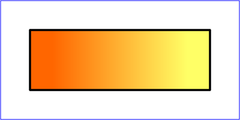
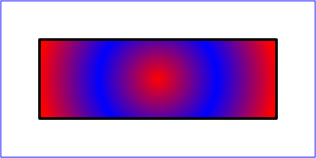

Presentations¶
An Ipe presentation is an Ipe PDF document that is presented using a PDF viewer and a video projector. Ipe has a number of features that make it easier to make such presentations.
Ipe comes with the presentation tool IpePresenter. It shows the current slide in one window (which you can make full screen on the external display), while showing the current slide, the next slide, notes for the current page, as well as a timer on your own display. IpePresenter not only works for Ipe presentations, but also for presentations made with beamer. It easily fits on and runs from a USB-stick, and does not require Latex on the computer where you give the presentation.
The following sections explain Ipe features that are useful for making presentations.
Ipe comes with a somewhat basic style sheet presentation.isy
for making presentations. For a more sophisticated presentation style
sheet, have a look at Jens’ webpage.
Presentation stylesheets¶
A presentation must use a dedicated stylesheet. Presentations must
use much larger fonts than what is normal for a figure. Don’t try to
make use of the LARGE and huge textsizes, but use a stylesheet
that properly defines normal to be a large textsize.
Ipe comes with a style sheet presentation.isy that can be used
for presentations. To create a new presentation, you can simply say:
ipe -sheet presentation
Note that presentation.isy is meant to be used instead of
basic.isy (not in addition to it).
This presentation stylesheet enlarges all standard sizes by a factor
2.8. Note the use of the <textstretch> element to magnify text:
<textstretch name="normal" value="2.8"/>
<textstretch name="large" value="2.8"/>
The text size you choose from the Ipe user interface (large, for
instance) is in fact used for two symbolic attributes, namely
textsize (where large maps to \large) and textstretch
(where it maps to no stretch in the standard style sheet). By setting
the text stretch, you can magnify fonts.
In addition, the <layout> element in this stylesheet redefines the
paper size to be of the correct proportions for a projector, and
defines a smaller area of the paper as the frame. The frame is the
area that should be used for the contents. The Insert text box
function, for instance, creates text objects that fill exactly the
width of the frame.
The <titlestyle> element defines the style of the page
title outside the frame. You can set the title for each page
using .
The LaTeX-preamble defined in the <preamble> element
redefines the standard font shape to cmss (Computer Modern Sans
Serif). Many people find sans-serif fonts easier to read on a screen.
In addition, it redefines the list environments to use less spacing,
and the text styles to not justify paragraphs (the <textstyle>
elements).
If you wish to use the page transition effects of Acrobat Reader, you
can define the effects in the stylesheet (using <effect>
elements), and set them using .
If you want to number the pages of the presentation, you’ll need to
use the <pagenumberstyle> element. It defines color, size,
position, and alignment of the page number, and provides a template
for the page number text. The template can use the following Latex
counters:
ipePagefor the current page number,ipeViewfor the current view number,ipePagesfor the total number of pages,ipeViewsfor the number of views of the current page,
and the special macro \ipeNumber{x}{y} that evaluates to x
when the page has only one view, and to y if there is more than
one view.
If the template is empty, this has the same effect as the following definition (this is also the default definition):
\ipeNumber{\arabic{ipePage}}{\arabic{ipePage} - \arabic{ipeView}}
The following example definition indicates the views of a single page with letters A, B, C, …:
<pagenumberstyle pos="300 100" size="Huge" color="navy"
halign="center">\ipeNumber{\arabic{ipePage}}{\arabic{ipePage}
\Alph{ipeView}}</pagenumberstyle>
The following definition uses roman numerals for the pages and does not indicate different views at all:
<pagenumberstyle pos="580 20" size="Huge" color="purple"
halign="right">\roman{ipePage}</pagenumberstyle>
And this shows both the current page and the total number of pages:
<pagenumberstyle pos="20 820" size="Huge" color="0.5 0 0"
valign="top">\arabic{ipePage}/\arabic{ipePages}</pagenumberstyle>
Views¶
When making a PDF presentation for a PDF Viewer or for IpePresenter, one would often like to present a page incrementally. For instance, I would first like to show a polygon, then add its triangulation, and finally color the vertices. Views make it possible to do this nicely.
An Ipe document consists of several pages, each of which can consist of an arbitrary number of views. When saving as PDF, each view generates a separate PDF page (if you only look at the result in a PDF viewer, you cannot tell whether two pages are actually two views of the same Ipe page or two different Ipe pages).
An Ipe page consists of a number of objects, a number of layers, and a number of views. Each object belongs to exactly one layer. A layer can be shown by any number of views—a view is really just a list of layers to be presented. In addition, a view keeps a record of the current active layer—this makes it easy to move around your views and edit them.
Views can also give a different meaning to symbolic attributes, so that objects that appear in blue on one view will be red on the next one. One can also change the dash pattern and pen width, and can even replace one symbol by a different one.
As a somewhat experimental feature, views can transform individual layers of the page. This allows you to move around or rotate objects from view to view, without having to make copies of the objects.
Finally, views can specify a graphic effect to be used by the PDF viewer when proceeding to the following PDF page.
Example¶
To return to our polygon triangulation example, let’s create an empty page. We draw a polygon into the default layer alpha. Now use , and draw the triangulation into the new layer beta. Note that the function not only created a new layer, but also a second view showing both alpha and beta. Try moving back and forth between the two views (using the PageUp and PageDown keys). You’ll see changes in the layer list on the left: in view 1, layer alpha is selected and active, in view 2, both layers are selected and beta is active. Create a third layer and view, and mark the vertices.
Save in PDF format, and voila, you have a lovely little presentation. The result is available here.
Text boxes¶
In presentations, one often has slides with mostly text. The textbox object is convenient for this, as one doesn’t need to use the mouse to create it. To create a slide where several text items appear one by one, one only needs to press F10 to create a textbox, then Shift+Ctrl+I to make a new view, F10 again for the next textbox, and so on. Finally, one moves the textboxes vertically for the most pleasing effect (Shift+Alt+Left Mouse does a constrained vertical translation, or Shift+Left Mouse in Translate mode).
Changing symbolic values inside a view¶
Imagine you have an object that is shown in dark orange on your current page, but on one specific view you want to highlight the object in purple.
To achieve this, go to the view, and open Edit view from the Views menu. In the attribute map field, write this line:
color:darkorange=purple;
You will notice that all objects on the page that had the
darkorange color now show in purple.
You can similarly map other attribute values, for instance:
color:navy=red;
color:darkorange=purple;
symbolsize:large=tiny;
pen:ultrafat=normal;
dashstyle:dotted=dashed;
symbol:mark/disk(sx)=mark/box(sx);
The attribute kinds you are allowed to modify are “pen”, “symbolsize”, “arrowsize”, “opacity”, “color”, “dashstyle”, and “symbol”. Both the original and the new attribute must be symbolic attributes defined in your style sheet.
It’s probably not a good idea to remap common attributes in your
document—this may quickly become confusing. A better approach would
be to create dedicated attribute values like emphasis, that
map to some standard value in the stylesheet, and which you can then
redefine in the views where you want to emphasize the object.
Transforming objects inside a view¶
The second large text field inside the Edit view dialog allows you to specify transformations for each layer of the page. For instance, you could write these definitions:
alpha=[1 0 0 1 20 100];
beta=[1 0 0 0.8 0 0];
This will translate all objects in layer alpha by the vector (20, 100) (that is, 20 units to the right and 100 units upwards), while all objects in layer beta are scaled in the y-direction by factor 0.8.
This is somewhat experimental—there is no good UI to figure out the right transformation matrices (you may want to draw a helper object, apply the transformation, and then use Edit as XML to look at the object’s matrix field).
Also, Ipe still considers the objects to be at their original place, it just displays them elsewhere. For instance, to modify an object you have to select it by clicking at its original location. (So, to modify an object, it is best is to go back to the original view where you made the object.)
Currently, the layer transformation is not taken into account when computing the bounding box of a page, so make sure you have other objects creating a suitable bounding box.
Controlling the PDF bounding box of a view¶
Note that all views of a page receive the same bounding box,
containing all objects visible on some view, plus all objects in a
layer named BBOX (even if that layer is not visible). This can be
used to force a larger bounding box without adding a white rectangle
or the like.
If you need independent bounding boxes for each view, create a layer
named VIEWBBOX. Any view in which this layer is visible will
receive a bounding box computed for the objects visible in this view
only.
Bookmarks¶
You can set a section title and a subsection title for each page of an Ipe document. Theses titles will be shown in the bookmarks list (right-click on a toolbar to make it visible). Double-clicking a title brings you directly to its page, making navigation of long documents much easier. The titles are also exported to PDF, and are visible in the bookmarks view of PDF viewers.
You can also use the section title of a page to refer to this page in ipetoipe and iperender.
Excluding a page from the presentation¶
If you add a layer with name NOPDF to a page (it does not need to
be visible in any view of the page), then the page is not included in
the PDF representation of the document. So while Ipe will show the
page normally, viewing the document with a PDF reader (including
IpePresenter) will not show that page.
Gradient patterns¶
Gradient patterns allow to shade objects with continuously changing colors. This is often used for backgrounds, or to achieve the illusion of three-dimensional spheres or cylinders.
The intended use of gradients is to allow the creation of attractive symbols inside the style sheet, for backgrounds, as bullets in item lists (see next section), or simply to define attractive glassy-ball symbols and the like that can be used through the Use symbol ipelet.
The Ipe user interface does not offer any way of creating or editing gradients. If your stylesheet defines a gradient, then it is possible to fill a path object with this gradient, but getting the gradient coordinate system right is not trivial. (The trick is to draw the path object at gradient coordinates, and translate/rotate it to the final location afterwards.)
The definition of a linear (axial) gradient looks like this:
<gradient name="linear" type="axial" extend="yes" coords="75 0 325 0">
<stop offset="0.05" color="1 0.4 0"/>
<stop offset="0.95" color="1 1 0.4"/>
</gradient>
If used like this:
<path stroke="0" fill="1" gradient="linear" pen="3">
50 50 m 350 50 l 350 150 l 50 150 l h
</path>
it will look like this:
A radial gradient looks like this:
<gradient name="radial" type="radial" extend="yes"
coords="200 100 0 200 100 150">
<stop offset="0" color="1 0 0"/>
<stop offset="0.5" color="0 0 1"/>
<stop offset="1" color="1 0 0"/>
</gradient>
It will look like this:
A common use of radial gradients is to define glassy balls like this:
<gradient name="ball" type="radial" coords="-4 10 2 0 0 18">
<stop offset="0" color="1 1 1"/>
<stop offset="1" color="0 0 1"/>
</gradient>
Note that the gradient is centered at 0 0, so it needs to be moved to the location where it is used:
<path matrix="3 0 0 3 100 100" fill="1" gradient="ball">
18 0 0 18 0 0 e
</path>
Normally, you would define a symbol looking like a glassy ball in your style sheet:
<ipestyle>
<gradient name="ball" type="radial" coords="-4 10 2 0 0 18">
<stop offset="0" color="1 1 1"/>
<stop offset="1" color="0 0 1"/>
</gradient>
<symbol name="ball(x)" transformations="translations">
<path fill="1" gradient="ball"> 18 0 0 18 0 0 e </path>
</symbol>
</ipestyle>
The glassy ball can then be used in the document using the Use
symbol ipelet. Note that transformations="translations" ensures
that stretching your drawing does not change the glassy ball. Adding
the (x) suffix to the symbol name allows you to resize the glassy
ball by changing the symbol size from the properties (the same
selector used to change the mark size).
For the precise syntax of the gradient definition see here. The easiest method of creating gradients, though, is to use an SVG editor such as Inkscape and to convert the SVG gradient to Ipe format using svgtoipe.
Prettier bullet points¶
Presentations often make use of itemize environments. You can
make these prettier in a number of ways:
You can color your bullets:
<preamble>
\def\labelitemi{\LARGE\textcolor{red}{$\bullet$}}
</preamble>
Enumeration numbers could be put in a colored box:
<preamble>
\newcommand{\labelenumi}{\fbox{\Roman{enumi}}}
</preamble>
You could use the Dingbats font for nice enumerations, for instance
by putting \usepackage{pifont} in your preamble, and then having
text objects with \begin{dinglist}{43} or \begin{dingautolist}{172}
(or use 182, 192, 202 for various circled numbers).
You can mark items as good and bad using these “bullets”:
Bad item:\textcolor{red}{\ding{55}}Good item:\textcolor{green}{\ding{52}}
Filming from the canvas¶
Some Ipe users make presentation videos directly from Ipe, as follows:
Make Ipe full-screen (Zoom menu);
Turn off the grid (Zoom menu);
Enable pretty display (Zoom menu);
Mac: Turn off the Snap toolbar and possibly the mode toolbar (Zoom menu);
Linux: Turn off or rearrange toolbars and panels to taste;
Windows: Turn off or rearrange toolbars by setting
prefs.win_toolbar_order;Set up your video software to film the canvas area of Ipe (where your document is shown).
You can now go through your presentation, using the Laser pointer mode to point to items on your slide, and using ink mode to write annotations directly onto the slides.
For this to work well, it is essential that the width of the canvas
remains fixed while you step through your document. Try it before you
start filming! You can change the contents of the “View” and “Page”
buttons by changing the preferences prefs.view_button_prefix and
prefs.page_button_prefix. Furthermore, on MacOS, you can force the
canvas width to remain fixed by making prefs.osx_properties_width
large enough.